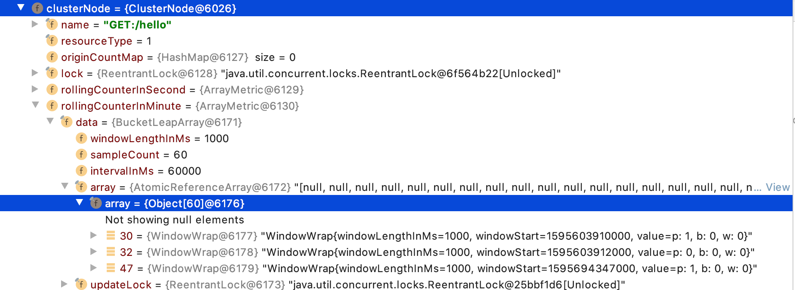

- 01 开篇词：一次服务雪崩问题排查经历.md.html
- 02 为什么需要服务降级以及常见的几种降级方式.md.html
- 03 为什么选择 Sentinel，Sentinel 与 Hystrix 的对比.md.html
- 04 Sentinel 基于滑动窗口的实时指标数据统计.md.html
- 05 Sentinel 的一些概念与核心类介绍.md.html
- 06 Sentinel 中的责任链模式与 Sentinel 的整体工作流程.md.html
- 07 Java SPI 及 SPI 在 Sentinel 中的应用.md.html
- 08 资源指标数据统计的实现全解析（上）.md.html
- 09 资源指标数据统计的实现全解析（下）.md.html
- 10 限流降级与流量效果控制器（上）.md.html
- 11 限流降级与流量效果控制器（中）.md.html
- 12 限流降级与流量效果控制器（下）.md.html
- 13 熔断降级与系统自适应限流.md.html
- 14 黑白名单限流与热点参数限流.md.html
- 15 自定义 ProcessorSlot 实现开关降级.md.html
- 16 Sentinel 动态数据源：规则动态配置.md.html
- 17 Sentinel 主流框架适配.md.html
- 18 Sentinel 集群限流的实现（上）.md.html
- 19 Sentinel 集群限流的实现（下）.md.html
- 20 结束语：Sentinel 对应用的性能影响如何？.md.html
- 21 番外篇：Sentinel 1.8.0 熔断降级新特性解读.md.html
- 捐赠
09 资源指标数据统计的实现全解析（下）
资源指标数据统计：StatisticSlot
StatisticSlot 才是实现资源各项指标数据统计的 ProcessorSlot，它与 NodeSelectorSlot、ClusterBuilderSlot 组成了资源指标数据统计流水线，分工明确。
首先 NodeSelectorSlot 为资源创建 DefaultNode，将 DefaultNode 向下传递，ClusterBuilderSlot 负责给资源的 DefaultNode 加工，添加 ClusterNode 这个零部件，再将 DefaultNode 向下传递给 StatisticSlot，如下图所示：
StatisticSlot 在统计指标数据之前会先调用后续的 ProcessorSlot，根据后续 ProcessorSlot 判断是否需要拒绝该请求的结果决定记录哪些指标数据，这也是为什么 Sentinel 设计的责任链需要由前一个 ProcessorSlot 在 entry 或者 exit 方法中调用 fireEntry 或者 fireExit 完成调用下一个 ProcessorSlot 的 entry 或 exit 方法，而不是使用 for 循环遍历调用 ProcessorSlot 的原因。每个 ProcessorSlot 都有权决定是先等后续的 ProcessorSlot 执行完成再做自己的事情，还是先完成自己的事情再让后续 ProcessorSlot 执行，与流水线有所区别。
StatisticSlot 源码框架如下：
public class StatisticSlot extends AbstractLinkedProcessorSlot<DefaultNode> {
@Override
public void entry(Context context, ResourceWrapper resourceWrapper, DefaultNode node, int count,
boolean prioritized, Object... args) throws Throwable {
try {
// Do some checking.
fireEntry(context, resourceWrapper, node, count, prioritized, args);
// .....
} catch (PriorityWaitException ex) {
// .....
} catch (BlockException e) {
// ....
throw e;
} catch (Throwable e) {
// .....
throw e;
}
}
@Override
public void exit(Context context, ResourceWrapper resourceWrapper, int count, Object... args) {
DefaultNode node = (DefaultNode)context.getCurNode();
// ....
fireExit(context, resourceWrapper, count);
}
}
- entry：先调用 fireEntry 方法完成调用后续的 ProcessorSlot#entry 方法，根据后续的 ProcessorSlot 是否抛出 BlockException 决定记录哪些指标数据，并将资源并行占用的线程数加 1。
- exit：若无任何异常，则记录响应成功、请求执行耗时，将资源并行占用的线程数减 1。
entry 方法
第一种情况：当后续的 ProcessorSlot 未抛出任何异常时，表示不需要拒绝该请求，放行当前请求。
当请求可正常通过时，需要将当前资源并行占用的线程数增加 1、当前时间窗口被放行的请求总数加 1，代码如下：
// Request passed, add thread count and pass count.
node.increaseThreadNum();
node.addPassRequest(count);
如果调用来源不为空，也将调用来源的 StatisticNode 的当前并行占用线程数加 1、当前时间窗口被放行的请求数加 1，代码如下：
if (context.getCurEntry().getOriginNode() != null) {
// Add count for origin node.
context.getCurEntry().getOriginNode().increaseThreadNum();
context.getCurEntry().getOriginNode().addPassRequest(count);
}
如果流量类型为 IN，则将资源全局唯一的 ClusterNode 的并行占用线程数、当前时间窗口被放行的请求数都增加 1，代码如下：
if (resourceWrapper.getEntryType() == EntryType.IN) {
// Add count for global inbound entry node for global statistics.
Constants.ENTRY_NODE.increaseThreadNum();
Constants.ENTRY_NODE.addPassRequest(count);
}
回调所有 ProcessorSlotEntryCallback#onPass 方法，代码如下：
// Handle pass event with registered entry callback handlers.
for (ProcessorSlotEntryCallback<DefaultNode> handler : StatisticSlotCallbackRegistry.getEntryCallbacks()) {
handler.onPass(context, resourceWrapper, node, count, args);
}
可调用 StatisticSlotCallbackRegistry#addEntryCallback 静态方法注册 ProcessorSlotEntryCallback，ProcessorSlotEntryCallback 接口的定义如下：
public interface ProcessorSlotEntryCallback<T> {
void onPass(Context context, ResourceWrapper resourceWrapper, T param, int count, Object... args) throws Exception;
void onBlocked(BlockException ex, Context context, ResourceWrapper resourceWrapper, T param, int count, Object... args);
}
- onPass：该方法在请求被放行时被回调执行。
- onBlocked：该方法在请求被拒绝时被回调执行。
第二种情况：捕获到类型为 PriorityWaitException 的异常。
这是特殊情况，在需要对请求限流时，只有使用默认流量效果控制器才可能会抛出 PriorityWaitException 异常，这部分内容将在分析 FlowSlot 的实现源码时再作分析。
当捕获到 PriorityWaitException 异常时，说明当前请求已经被休眠了一会了，但请求还是允许通过的，只是不需要为 DefaultNode 记录这个请求的指标数据了，只自增当前资源并行占用的线程数，同时，DefaultNode 也会为 ClusterNode 自增并行占用的线程数。最后也会回调所有 ProcessorSlotEntryCallback#onPass 方法。这部分源码如下。
node.increaseThreadNum();
if (context.getCurEntry().getOriginNode() != null) {
// Add count for origin node.
context.getCurEntry().getOriginNode().increaseThreadNum();
}
if (resourceWrapper.getEntryType() == EntryType.IN) {
// Add count for global inbound entry node for global statistics.
Constants.ENTRY_NODE.increaseThreadNum();
}
// Handle pass event with registered entry callback handlers.
for (ProcessorSlotEntryCallback<DefaultNode> handler : StatisticSlotCallbackRegistry.getEntryCallbacks()) {
handler.onPass(context, resourceWrapper, node, count, args);
}
第三种情况：捕获到 BlockException 异常，BlockException 异常只在需要拒绝请求时抛出。
当捕获到 BlockException 异常时，将异常记录到调用链路上下文的当前 Entry（StatisticSlot 的 exit 方法会用到），然后调用 DefaultNode#increaseBlockQps 方法记录当前请求被拒绝，将当前时间窗口的 block qps 这项指标数据的值加 1。如果调用来源不为空，让调用来源的 StatisticsNode 也记录当前请求被拒绝；如果流量类型为 IN，则让用于统计所有资源指标数据的 ClusterNode 也记录当前请求被拒绝。这部分的源码如下：
// Blocked, set block exception to current entry.
context.getCurEntry().setError(e);
// Add block count.
node.increaseBlockQps(count);
if (context.getCurEntry().getOriginNode() != null) {
context.getCurEntry().getOriginNode().increaseBlockQps(count);
}
if (resourceWrapper.getEntryType() == EntryType.IN) {
// Add count for global inbound entry node for global statistics.
Constants.ENTRY_NODE.increaseBlockQps(count);
}
// Handle block event with registered entry callback handlers.
for (ProcessorSlotEntryCallback<DefaultNode> handler : StatisticSlotCallbackRegistry.getEntryCallbacks()) {
handler.onBlocked(e, context, resourceWrapper, node, count, args);
}
throw e;
StatisticSlot 捕获 BlockException 异常只是为了收集被拒绝的请求，BlockException 异常还是会往上抛出。抛出异常的目的是为了拦住请求，让入口处能够执行到 catch 代码块完成请求被拒绝后的服务降级处理。
第四种情况：捕获到其它异常。
其它异常并非指业务异常，因为此时业务代码还未执行，而业务代码抛出的异常是通过调用 Tracer#trace 方法记录的。
当捕获到非 BlockException 异常时，除 PriorityWaitException 异常外，其它类型的异常都同样处理。让 DefaultNode 记录当前请求异常，将当前时间窗口的 exception qps 这项指标数据的值加 1。调用来源的 StatisticsNode、用于统计所有资源指标数据的 ClusterNode 也记录下这个异常。这部分源码如下：
// Unexpected error, set error to current entry.
context.getCurEntry().setError(e);
// This should not happen.
node.increaseExceptionQps(count);
if (context.getCurEntry().getOriginNode() != null) {
context.getCurEntry().getOriginNode().increaseExceptionQps(count);
}
if (resourceWrapper.getEntryType() == EntryType.IN) {
Constants.ENTRY_NODE.increaseExceptionQps(count);
}
throw e;
exit 方法
exit 方法被调用时，要么请求被拒绝，要么请求被放行并且已经执行完成，所以 exit 方法需要知道当前请求是否正常执行完成，这正是 StatisticSlot 在捕获异常时将异常记录到当前 Entry 的原因，exit 方法中通过 Context 可获取到当前 CtEntry，从当前 CtEntry 可获取 entry 方法中写入的异常。
exit 方法源码如下（有删减）：
@Override
public void exit(Context context, ResourceWrapper resourceWrapper, int count, Object... args) {
DefaultNode node = (DefaultNode)context.getCurNode();
if (context.getCurEntry().getError() == null) {
// 计算耗时
long rt = TimeUtil.currentTimeMillis() - context.getCurEntry().getCreateTime();
// 记录执行耗时与成功总数
node.addRtAndSuccess(rt, count);
if (context.getCurEntry().getOriginNode() != null) {
context.getCurEntry().getOriginNode().addRtAndSuccess(rt, count);
}
// 自减当前资源占用的线程数
node.decreaseThreadNum();
// origin 不为空
if (context.getCurEntry().getOriginNode() != null) {
context.getCurEntry().getOriginNode().decreaseThreadNum();
}
// 流量类型为 in 时
if (resourceWrapper.getEntryType() == EntryType.IN) {
Constants.ENTRY_NODE.addRtAndSuccess(rt, count);
Constants.ENTRY_NODE.decreaseThreadNum();
}
}
// Handle exit event with registered exit callback handlers.
Collection<ProcessorSlotExitCallback> exitCallbacks = StatisticSlotCallbackRegistry.getExitCallbacks();
for (ProcessorSlotExitCallback handler : exitCallbacks) {
handler.onExit(context, resourceWrapper, count, args);
}
fireExit(context, resourceWrapper, count);
}
exit 方法中通过 Context 可获取当前资源的 DefaultNode，如果 entry 方法中未出现异常，那么说明请求是正常完成的，在请求正常完成情况下需要记录请求的执行耗时以及响应是否成功，可将当前时间减去调用链路上当前 Entry 的创建时间作为请求的执行耗时。
资源指标数据的记录过程
ClusterNode 才是一个资源全局的指标数据统计节点，但我们并未在 StatisticSlot#entry 方法与 exit 方法中看到其被使用。因为 ClusterNode 被 ClusterBuilderSlot 交给了 DefaultNode 掌管，在 DefaultNode 的相关指标数据收集方法被调用时，ClusterNode 的对应方法也会被调用，如下代码所示：
public class DefaultNode extends StatisticNode {
......
private ClusterNode clusterNode;
@Override
public void addPassRequest(int count) {
super.addPassRequest(count);
this.clusterNode.addPassRequest(count);
}
}
记录某项指标数据指的是：针对当前请求，记录当前请求的某项指标数据，例如请求被放行、请求被拒绝、请求的执行耗时等。
假设当前请求被成功处理，StatisticSlot 会调用 DefaultNode#addRtAndSuccess 方法记录请求处理成功、并且记录处理请求的耗时，DefaultNode 先调用父类的 addRtAndSuccess 方法，然后 DefaultNode 会调用 ClusterNode#addRtAndSuccess 方法。ClusterNode 与 DefaultNode 都是 StatisticNode 的子类，StatisticNode#addRtAndSuccess 方法源码如下：
@Override
public void addRtAndSuccess(long rt, int successCount) {
// 秒级滑动窗口
rollingCounterInSecond.addSuccess(successCount);
rollingCounterInSecond.addRT(rt);
// 分钟级的滑动窗口
rollingCounterInMinute.addSuccess(successCount);
rollingCounterInMinute.addRT(rt);
}
rollingCounterInSecond 是一个秒级的滑动窗口，rollingCounterInMinute 是一个分钟级的滑动窗口，类型为 ArrayMetric。分钟级的滑动窗口一共有 60 个 MetricBucket，每个 MetricBucket 都被 WindowWrap 包装，每个 MetricBucket 统计一秒钟内的各项指标数据，如下图所示：

当调用 rollingCounterInMinute#addSuccess 方法时，由 ArrayMetric 根据当前时间戳获取当前时间窗口的 MetricBucket，再调用 MetricBucket#addSuccess 方法将 success 这项指标的值加上方法参数传递进来的值（一般是 1）。MetricBucket 使用 LongAdder 记录各项指标数据的值。
Sentinel 在 MetricEvent 枚举类中定义了 Sentinel 会收集哪些指标数据，MetricEvent 枚举类的源码如下：
public enum MetricEvent {
PASS,
BLOCK,
EXCEPTION,
SUCCESS,
RT,
OCCUPIED_PASS
}
- pass 指标：请求被放行的总数
- block：请求被拒绝的总数
- exception：请求处理异常的总数
- success：请求被处理成功的总数
- rt：被处理成功的请求的总耗时
- occupied_pass：预通过总数（前一个时间窗口使用了当前时间窗口的 passQps）
其它的指标数据都可通过以上这些指标数据计算得出，例如，平均耗时可根据总耗时除以成功总数计算得出。
资源指标数据统计总结
- 一个调用链路上只会创建一个 Context，在调用链路的入口创建（一个调用链路上第一个被 Sentinel 保护的资源）。
- 一个 Context 名称只创建一个 EntranceNode，也是在调用链路的入口创建，调用 Context#enter 方法时创建。
- 与方法调用的入栈出栈一样，一个线程上调用多少次 SphU#entry 方法就会创建多少个 CtEntry，前一个 CtEntry 作为当前 CtEntry 的父节点，当前 CtEntry 作为前一个 CtEntry 的子节点，构成一个双向链表。Context.curEntry 保存的是当前的 CtEntry，在调用当前的 CtEntry#exit 方法时，由当前 CtEntry 将 Context.curEntry 还原为当前 CtEntry 的父节点 CtEntry。
- 一个调用链路上，如果多次调用 SphU#entry 方法传入的资源名称都相同，那么只会创建一个 DefaultNode，如果资源名称不同，会为每个资源名称创建一个 DefaultNode，当前 DefaultNode 会作为调用链路上的前一个 DefaultNode 的子节点。
- 一个资源有且只有一个 ProcessorSlotChain，一个资源有且只有一个 ClusterNode。
- 一个 ClusterNode 负责统计一个资源的全局指标数据。
- StatisticSlot 负责记录请求是否被放行、请求是否被拒绝、请求是否处理异常、处理请求的耗时等指标数据，在 StatisticSlot 调用 DefaultNode 用于记录某项指标数据的方法时，DefaultNode 也会调用 ClusterNode 的相对应方法，完成两份指标数据的收集。
- DefaultNode 统计当前资源的各项指标数据的维度是同一个 Context（名称相同），而 ClusterNode 统计当前资源各项指标数据的维度是全局。
© 2019 - 2023 Liangliang Lee. Powered by gin and hexo-theme-book.